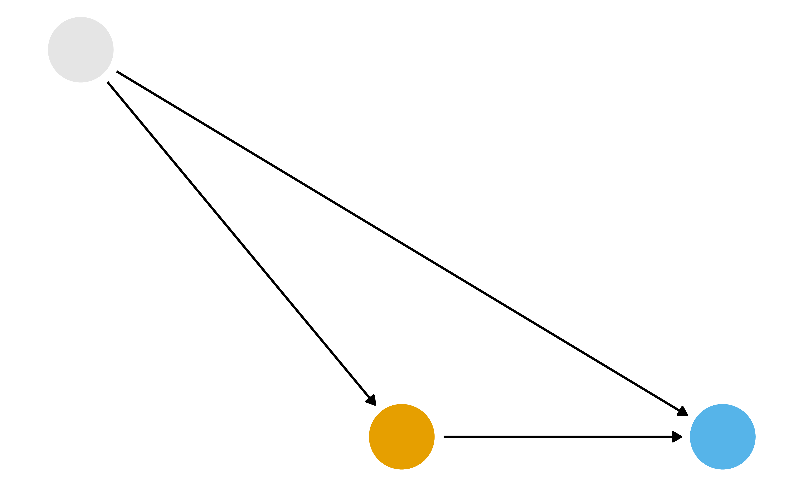
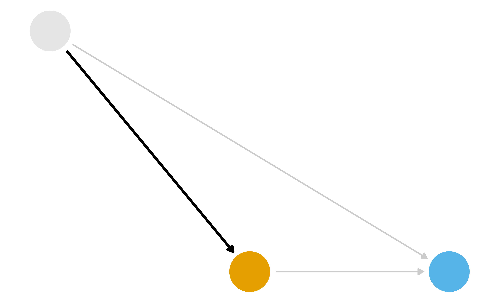
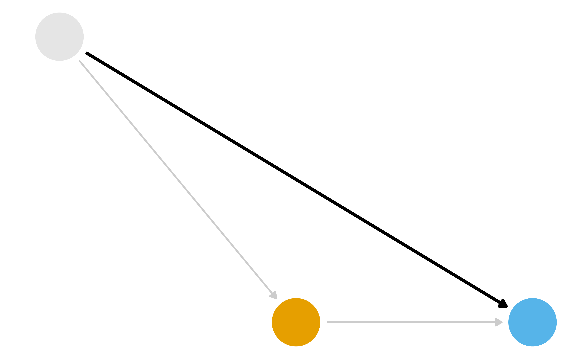
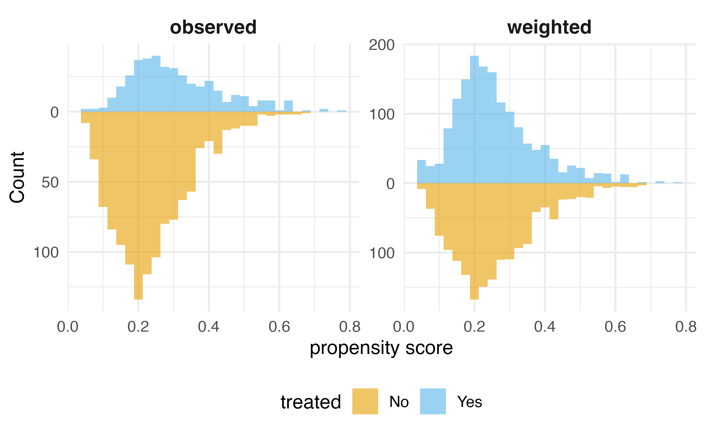
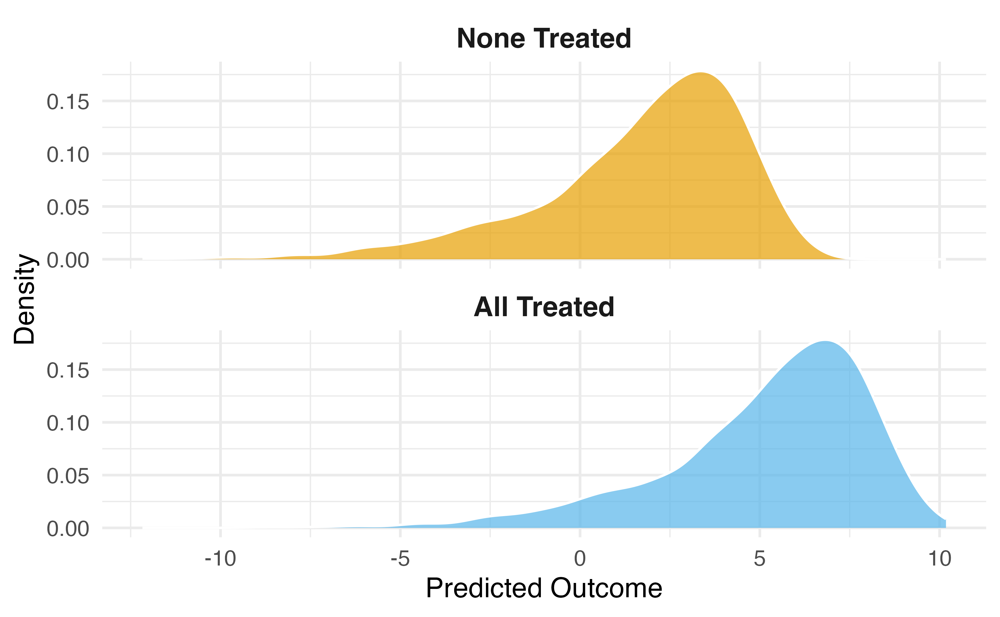
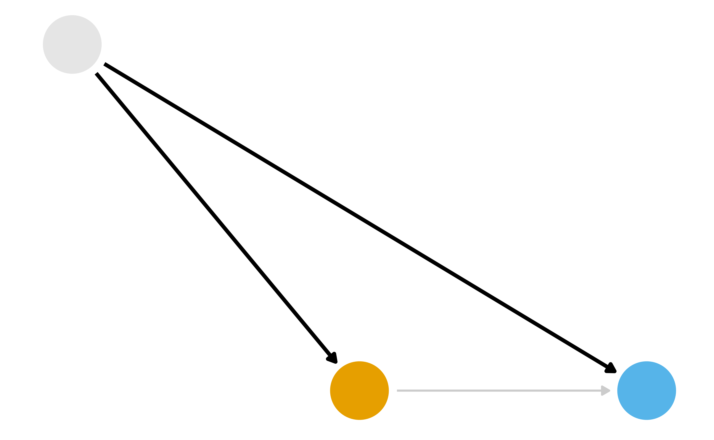
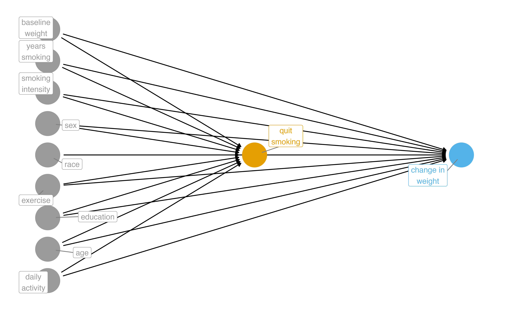
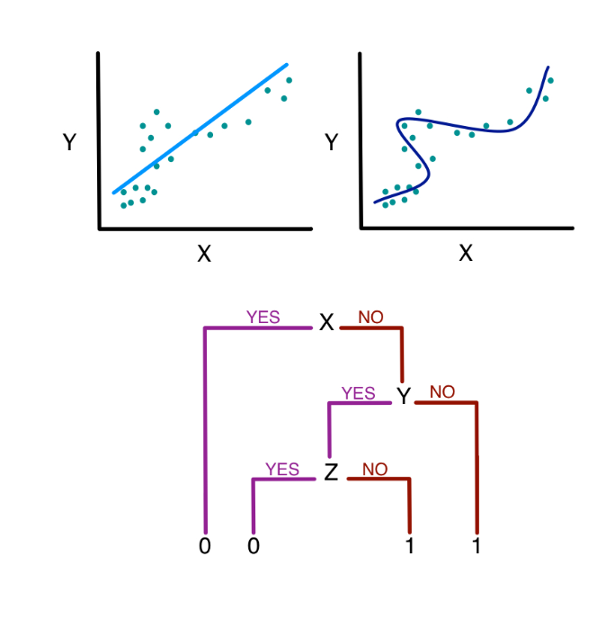
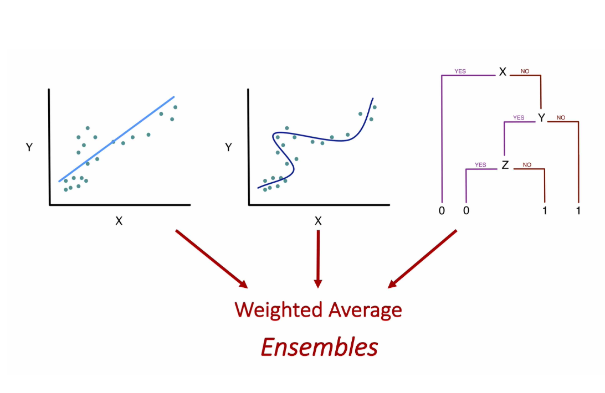

sl_library <- c("SL.glm", "SL.ranger", "SL.gam")
propensity_sl <- SuperLearner(
Y = as.integer(nhefs_complete_uc$qsmk == "Yes"),
X = nhefs_complete_uc |>
select(sex, race, age, education, smokeintensity,
smokeyrs, exercise, active, wt71) |>
mutate(across(everything(), as.numeric)),
family = binomial(),
SL.library = sl_library,
cvControl = list(V = 5)
)Machine Learning for Causal Inference
Malcolm Barrett
Stanford University
Machine learning cannot automate causal inference… but maybe it can help some difficult parts of estimating causal effects
Review: Estimands, estimators, and estimates
Normal regression estimates associations. But we want causal estimates: what would happen if everyone in the study were exposed to x vs if no one was exposed.
Image source: Simon Grund
What part of the DAG do we want to try to deal with?
What part of the DAG do we want to try to deal with?
What part of the DAG do we want to try to deal with?
Inverse Probability Weighting (IPW)
- Fit a model for
x ~ zwhere z is all confounders - Calculate the propensity score for each observation
- Calculate the weights
- Fit a weighted regression model for
y ~ xusing the weights
Inverse Probability Weighting (IPW)
G-computation
- Fit a model for
y ~ x + zwhere z is all confounders - Create a duplicate of your data set for each level of
x - Set the value of x to a single value for each cloned data set (e.g
x = 1for one,x = 0for the other)
G-computation
- Make predictions using the model on the cloned data sets
- Calculate the estimate you want, e.g.
mean(x_1) - mean(x_0)
G-computation
What part of the DAG do we want to try to deal with?
Two Causal Questions
Does quitting smoking cause weight gain?
Example: The Seven Dwarfs Mine Train

Photo by Anna CC-BY-SA-4.0
Historically, guests who stayed in a Walt Disney World resort hotel were able to access the park during “Extra Magic Hours” during which the park was closed to all other guests.
These extra hours could be in the morning or evening.
The Seven Dwarfs Mine Train is a ride at Walt Disney World’s Magic Kingdom. Typically, each day Magic Kingdom may or may not be selected to have these “Extra Magic Hours”.
We are interested in examining the relationship between whether there were “Extra Magic Hours” in the morning and the average wait time for the Seven Dwarfs Mine Train the same day between 9am and 10am.
Machine Learning for Causal Inference
What algorithm should we use to make predictions?
Image source: Sherri Rose
Ensemble Algorithms with SuperLearner
Given a set of candidate algorithms (and hyperparameters), stacked ensembles combine them to minimize (cross-validated) prediction error. Stacked ensembles will perform at least as well as the best individual algorithm.
SuperLearner: Exposure Model
SuperLearner: Exposure Model
Call:
SuperLearner(Y = as.integer(nhefs_complete_uc$qsmk == "Yes"), X = mutate(select(nhefs_complete_uc,
sex, race, age, education, smokeintensity, smokeyrs, exercise, active,
wt71), across(everything(), as.numeric)), family = binomial(), SL.library = sl_library,
cvControl = list(V = 5))
Risk Coef
SL.glm_All 0.1837871 0.00000000
SL.ranger_All 0.1943978 0.05247478
SL.gam_All 0.1825974 0.94752522SuperLearner: Outcome Model
SuperLearner: Outcome Model
Call:
SuperLearner(Y = nhefs_complete_uc$wt82_71, X = mutate(select(nhefs_complete_uc,
qsmk, sex, race, age, education, smokeintensity, smokeyrs, exercise,
active, wt71), across(everything(), as.numeric)), family = gaussian(),
SL.library = sl_library, cvControl = list(V = 5))
Risk Coef
SL.glm_All 55.41405 0.01678317
SL.ranger_All 57.24412 0.13366720
SL.xgboost_All 72.77471 0.00000000
SL.gam_All 54.53583 0.84954963Your Turn 1
08:00
First, create a character vector sl_library that specifies the following algorithms: “SL.glm”, “SL.ranger”, “SL.xgboost”, “SL.gam”. Then, Fit a SuperLearner for the exposure model using the SuperLearner package. The predictors for this model should be the confounders identified in the DAG: park_ticket_season, park_close, and park_temperature_high. The outcome is park_extra_magic_morning.
Fit a SuperLearner for the outcome model using the SuperLearner package. The predictors for this model should be the confounders plus the exposure: park_extra_magic_morning, park_ticket_season, park_close, and park_temperature_high. The outcome is wait_minutes_posted_avg.
Inspect the fitted SuperLearner objects.
IPW with SuperLearner
IPW with SuperLearner
G-computation with SuperLearner
data_all_quit <- nhefs_complete_uc |>
select(qsmk, sex, race, age, education, smokeintensity,
smokeyrs, exercise, active, wt71) |>
mutate(across(everything(), as.numeric)) |>
mutate(qsmk = 1)
data_all_no_quit <- nhefs_complete_uc |>
select(qsmk, sex, race, age, education, smokeintensity,
smokeyrs, exercise, active, wt71) |>
mutate(across(everything(), as.numeric)) |>
mutate(qsmk = 0)
pred_quit <- predict(outcome_sl, newdata = data_all_quit)$pred[, 1]
pred_no_quit <- predict(outcome_sl, newdata = data_all_no_quit)$pred[, 1]
mean(pred_quit - pred_no_quit)[1] 2.979202Your Turn 2
08:00
Implement the IPW algorithm using the SuperLearner propensity scores
Implement the G-computation algorithm using the SuperLearner outcome predictions
Targeted Maximum Likelihood Estimation (TMLE)
Targeted Learning
- TMLE is a flexible, efficient method for estimating causal effects based in semi-parametric theory
- TMLE solves three problems: doubly robustness, targeted estimation, and valid statistical inference
Targeted Learning: doubly robustness
- In IPW and G-computation, we estimate the propensity score and outcome model separately. If either model is misspecified, the estimate will be biased.
- In TMLE, we combine the two models in a way that is doubly robust: if either the propensity score or outcome model is correctly specified, the estimate will be consistent.
Targeted Learning: targeted estimation
- In IPW and G-computation, we estimate the average treatment effect (ATE) using predictions from the exposure and outcome models. But these algorithms optimize for the predictions, not the ATE.
- In TMLE, we adjust the predictions to specifically target the ATE. We change the bias-variance tradeoff to focus on the ATE rather than just minimizing prediction error. This is a debiasing step that also improves the efficiency of the estimate!
Targeted Learning: valid statistical inference
- In IPW and G-computation, we cannot easily get valid confidence intervals with ML. Bootstrapping is often used, but it can be computationally intensive and not always valid.
- In TMLE, we can use the influence curve to get valid confidence intervals. The influence curve is a way to estimate the variance of the TMLE estimate, even when using complex ML algorithms.
The TMLE Algorithm
- Start with SuperLearner predictions for the outcome
- Calculate the propensity scores using SuperLearner
- Create the clever covariate using the propensity scores
The TMLE Algorithm
- Fit the fluctuation model to learn how much to adjust the outcome predictions
- Update the predictions with the targeted adjustment
- Calculate the TMLE estimate and standard error using the influence curve
TMLE Step 1: Initial Predictions (on the bounded [0,1] scale)
# For TMLE with continuous outcomes, fit SuperLearner on bounded Y
min_y <- min(nhefs_complete_uc$wt82_71)
max_y <- max(nhefs_complete_uc$wt82_71)
y_bounded <- (nhefs_complete_uc$wt82_71 - min_y) / (max_y - min_y)
# Fit new SuperLearner on bounded outcome
outcome_sl_bounded <- SuperLearner(
Y = y_bounded,
X = nhefs_complete_uc |>
select(qsmk, sex, race, age, education, smokeintensity,
smokeyrs, exercise, active, wt71) |>
mutate(across(everything(), as.numeric)),
family = quasibinomial(),
SL.library = sl_library,
cvControl = list(V = 5)
)TMLE Step 1: Initial Predictions (on the bounded [0,1] scale)
initial_pred_quit <- predict(outcome_sl_bounded, newdata = data_all_quit)$pred[, 1]
initial_pred_no_quit <- predict(outcome_sl_bounded, newdata = data_all_no_quit)$pred[, 1]
# Predictions for observed treatment
initial_pred_observed <- ifelse(
nhefs_complete_uc$qsmk == "Yes",
initial_pred_quit,
initial_pred_no_quit
)TMLE Step 2: Clever Covariate
- Not the same as IPW weights!
- Part of the efficient influence function
- Helps target the ATE specifically
TMLE Step 3: Targeting
clever_covariate
0.002936146 - Small epsilon = initial estimate was good
- Large epsilon = needed more adjustment
TMLE Step 4: Update Predictions
# Update predictions on logit scale, then transform back
logit_pred_quit <- qlogis(initial_pred_quit) + epsilon * (1 / propensity_scores)
logit_pred_no_quit <- qlogis(initial_pred_no_quit) + epsilon * (-1 / (1 - propensity_scores))
# Transform back to probability scale
targeted_pred_quit <- plogis(logit_pred_quit)
targeted_pred_no_quit <- plogis(logit_pred_no_quit)Your Turn 3
10:00
Calculate initial predictions for treated/control scenarios
Create the clever covariate using propensity scores
Fit the fluctuation model with offset and no intercept
Update predictions with the targeted adjustment
TMLE ATE
initial_ate <- mean(
initial_pred_quit - initial_pred_no_quit
# Transform back to original scale for ATE
) * (max_y - min_y)
targeted_ate <- mean(
targeted_pred_quit - targeted_pred_no_quit
) * (max_y - min_y)
tibble(initial = initial_ate, targeted = targeted_ate)# A tibble: 1 × 2
initial targeted
<dbl> <dbl>
1 2.75 3.15TMLE Inference
targeted_pred_observed <- ifelse(
nhefs_complete_uc$qsmk == "Yes",
targeted_pred_quit,
targeted_pred_no_quit
)
# IC uses bounded outcomes and predictions
ic <- clever_covariate * (y_bounded - targeted_pred_observed) +
targeted_pred_quit - targeted_pred_no_quit - targeted_ate / (max_y - min_y)
# Standard error on original scale
se_tmle <- sqrt(var(ic) / nrow(nhefs_complete_uc)) * (max_y - min_y)
# 95% CI
tibble(
ate = targeted_ate,
se = se_tmle,
lower_ci = targeted_ate - 1.96 * se_tmle,
upper_ci = targeted_ate + 1.96 * se_tmle
)TMLE Inference
# A tibble: 1 × 4
ate se lower_ci upper_ci
<dbl> <dbl> <dbl> <dbl>
1 3.15 0.447 2.27 4.02Using the tmle Package
library(tmle)
tmle_result <- tmle(
Y = nhefs_complete_uc$wt82_71,
A = as.integer(nhefs_complete_uc$qsmk == "Yes"),
W = nhefs_complete_uc |>
select(sex, race, age, education, smokeintensity,
smokeyrs, exercise, active, wt71) |>
mutate(across(everything(), as.numeric)),
Q.SL.library = sl_library,
g.SL.library = sl_library
)
tibble(
ate = tmle_result$estimates$ATE$psi,
lower_ci = tmle_result$estimates$ATE$CI[[1]],
upper_ci = tmle_result$estimates$ATE$CI[[2]]
)# A tibble: 1 × 3
ate lower_ci upper_ci
<dbl> <dbl> <dbl>
1 3.44 2.56 4.31Your Turn 4
05:00
Calculate the TMLE ATE and compare to the initial (g-computation) estimate
Work through the code to compute the variance and CIs (nothing to change here)
Key Takeaways
- ML improves flexibility for confounding functional form, not identification
- Still need DAGs and causal assumptions
- TMLE is statistically efficient, updates predictions to target the causal effect
- Valid inference even with complex ML